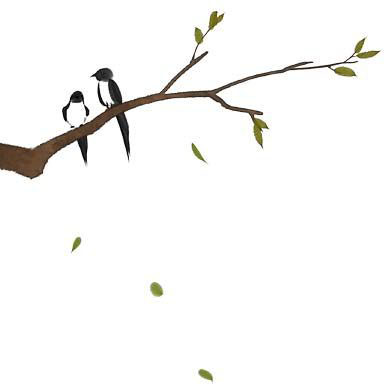

幼年时在老家西厢房，姊姊为我讲东坡词，有一回讲到《定风波》中“一蓑烟雨任平生”这个句子时，让我吃了一惊，仿佛见到一个竹杖芒鞋的老人在江湖道上踽踽独行，身前身后都是烟雨弥漫，一条长路连到远天去。
“他为什么？”我问。
“他什么都不要了。”姊姊说，“所以到后来有‘回首向来萧瑟处，归去，也无风雨也无情’之句。”
“这样未免太寂寞了，他应该带一壶酒、一份爱、一腔热血。”
“在烟中腾云过了，在雨里行走过了，什么都过了，还能如何？所谓‘来往烟波非定居，生涯蓑笠外无余’，生命的事一经过了，再热烈也是平常。”
年纪稍长，才知道“竹杖芒鞋轻胜马，谁怕？一蓑烟雨任平生”的境界并不容易达致，因为生命中真是有不少不可逃不可抛的东西，名利倒还在其次，至少像一壶酒、一份爱、一腔热血都是不易逃的，尤其是情爱。
记得日本小说家武者小路实笃曾写过一个故事，传说有一个久米仙人，在尘世里颇为情苦，为了逃情，入山苦修成道，一天腾云游经某地，看见一个浣纱女足胫甚白，久米仙人为之目眩神驰，凡念顿生，飘忽之间，已经自云头跌下。可见逃情并不是苦修就可以得到。
我觉得“逃情”必须是一时兴到，妙手偶得，如写诗一样，也和酒趣一样，狂吟浪醉之际，诗涌如浆，此时大可以用烈酒热冷梦，一时彻悟。倘若苦苦修炼，可能达到“好梦才成又断，春寒似有还无”的境界，离逃情尚远，因此一见到“乱头粗服，不掩国色”的浣纱女就坠落云头了。
前年冬天，我遭到情感的大创剧痛，曾避居花莲逃情，繁星冷月之际与和尚们谈起尘世的情爱之苦，谈到凄凉处连和尚都泪不能禁。如果有人问我：“世间情是何物？”我会答曰：“不可逃之物。”连冰冷的石头相碰都会撞出火花来，每个石头中事实上都有火种，可见再冰冷的事物也有感性的质地，情何以逃呢？
人纵使能相忘于江湖
情却是比江湖更大的
情仿佛是一个大盆，再善游的鱼也不能游出盆中，人纵使能相忘于江湖，情却是比江湖更大的。
我想，逃情最有效的方法可能是更勇敢地去爱，因为情可以病，也可以治病。假如看遍了天下足胫，浣纱女再国色天香也无可奈何了。情者是堂堂巍巍，壁立千仞，从低处看是仰不见顶，自高处观是俯不见底，令人不寒而栗，但是如果在千仞上多走几遭，就没有那么可怖了。
理学家程明道曾与弟弟程伊川共同赴友人宴席，席间友人召妓共饮，伊川正襟危坐，目不斜视，明道则毫不在乎，照吃照饮。宴后，伊川责明道不恭谨，明道先生答曰：“目中有妓，心中无妓！”这是何等洒脱的胸襟，正是“云月相同，溪山各异”，是凡人所不能致的境界。
说到逃情，不只是逃人世的情爱，有时候心中有挂也是情牵。有一回，暖香吹月时节与友在碧潭共醉，醉后扶上木兰舟，欲纵舟大饮，朋友说：“也要楚天阔，也要大江流，也要望不见前后，才能对月再下酒。”死拒不饮，这就是心中有挂，即使挂的是楚天大江，终不能无虑，不能万情皆忘。
以前读《词苑丛谈》，其中有一段故事：
后周末，汴京有一石氏开茶坊，有一个乞丐来索饮，石氏的幼女敬而与之，如是者达一个月。有一天被父亲发现打了她一顿，她非但不退缩，反而供奉益谨。乞丐对女孩说：“你愿喝我的残茶吗？”女嫌之，乞丐把茶倒一部分在地上，满室生异香，女孩于是喝掉剩下的残茶，一喝便觉神清体健。
乞丐对女孩说：“我就是吕仙，你虽然没有缘分喝尽我的残茶，但我还是让你求一个愿望。”女只求长寿，吕仙留下几句话：“子午当餐日月精，元关门户启还扃，长似此，过平生，且把阴阳仔细烹。”遂飘然而去。
这个故事让我体察到万情皆忘，“且把阴阳仔细烹”实在是神仙的境界，石姓少女已是人间罕有，还是忘不了长寿，忘不了嫌恶，最后仍然落空，可见情不但不可逃，也不可求。
年岁越长，越觉得苏东坡“一蓑烟雨任平生”“也无风雨也无情”词意之不可得，想东坡也有“春色三分，二分尘土，一分流水。细看不是杨花，点点是离人泪”的情思；有“但愿人长久，千里共婵娟”的情愿；有“念故人老大，风流未减，空回首，烟波里”的情怨；也有“若待得君来向此，花前对酒不忍触。共粉泪，雨簌簌”的情冷，可见“一蓑烟雨任平生”只是他的向往。
情何以可逃呢？
传说在北极的人因为天寒地冻，一开口说话就结成冰雪，对方听不见，只好回家慢慢地烤来听……
这是个极度浪漫的传说，想是多情的南方人编出来的。
可是，我们假设说话结冰是真有其事，也是颇有困难，试想：回家烤雪煮雪的时候要用什么火呢？因为人的言谈是有情绪的，煮得太慢或太快都不足以表达说话的情绪。
如果我生在北极，可能要为煮的问题烦恼半天，与性急的人交谈，回家要用大火煮烤；与性温的人交谈，回家要用文火。倘若与人吵架呢？回家一定要生个烈火，才能声闻当时哔哔剥剥的火爆声。
遇到谈情说爱的时候，回家就要仔细酿造当时的气氛，先用情诗情词裁冰，把它切成细细的碎片，加上一点酒来煮，那么，煮出来的话便能使人微醉。倘若情浓，则不可以用炉火，要用烛火再加一杯咖啡，才不会醉得太厉害，还能维持一丝清醒。
遇到不喜欢的人不喜欢的话就好办了，把结成的冰随意弃置就可以了。爱听的话则可以煮一半，留一半他日细细品尝，住在北极的人真是太幸福了。
但是幸福也不常驻，有时候天气太冷，火生不起来，是让人着急的，只好拿着冰雪用手慢慢让它融化，边融边听。遇到性急的人恐怕要用雪往墙上摔，摔得力小时听不见，摔得用力则声震屋瓦，造成噪音。
我向往北极说话的浪漫世界，那是个宁静祥和又能自己制造生活的世界，在我们这个到处都是噪音的时代里，有时候我会希望大家说出来的话都结成冰雪，回家如何处理是自家的事，谁也管不着。尤其是人多要开些无聊的会议时，可以把那块嘈杂的大雪球扔在家前的阴沟里，让它永远见不到天日。
斯时斯地，煮雪恐怕要变成一种学问，生命经验丰富的人可以依据雪的大小、成色，专门帮人煮雪为生。因为要煮得恰到好处和说话时恰如其分一样，确实不易。年轻的恋人则可以去借别人的“情雪”，借别人的雪来浇自己心中的块垒。
如果失恋，等不到冰雪尽融的时候，就放一把火把雪屋都烧了，烧成另一个春天。
煮雪如果真有其事，别的东西也可以留下，我们可以用一个空瓶把今夜的桂花香装起来，等桂花谢了，秋天过去，再打开瓶盖，细细品尝。
把初恋的温馨用一个精致的琉璃盒子盛装，等到青春过尽垂垂老矣的时候，掀开盒盖，扑面一股热流，足以使我们老怀甚慰。
这其中还有许多意想不到的情趣，譬如将月光装在酒壶里，用文火一起温来喝……此中有真意，乃是酒仙的境界。
有一次与朋友住在狮头山，每天黄昏时候在刻着“即心是佛”的大石头下开怀痛饮，常喝到月色满布才回到庙里睡觉，过着神仙一样的生活。最后一天我们都喝得有点醉了，携着酒壶下山，走到山下时顿觉胸中都是山香云气，酒气不知道跑到何方，才知道喝酒原有这样的境界。
有时候抽象的事物也可以让我们感知，有时候实体的事物也能转眼化为无形，岁月当是明证，我们活的时候真正感觉到自己是存在的，岁月的脚步一走过，转眼便如云烟无形。但是，这些消逝于无形的往事，却可以拿来下酒，酒后便会浮现出来。
喝酒是有哲学的，准备许多下酒菜，喝得杯盘狼藉是下乘的喝法；几粒花生米、一盘豆腐干，和三五好友天南地北是中乘的喝法；一个人独斟自酌，举杯邀明月，对影成三人，是上乘的喝法。
关于上乘的喝法，春天的时候可以面对满园怒放的杜鹃细饮五加皮；夏天的时候，在满树狂花中痛饮啤酒；秋日薄暮，用菊花煮竹叶青，人与海棠俱醉；冬寒时节，则面对篱笆间的忍冬花，用蜡梅温一壶大曲。这种种，就到了无物不可下酒的境界。
当然，诗词也可以下酒。
俞文豹在《历代诗余引吹剑录》中谈到一个故事，提到苏东坡有一次在玉堂日，有一幕士善歌，东坡因问曰：“我词何如柳七（即柳永）？”幕士对曰：“柳郎中词，只合十七八女郎，执红牙板，歌‘杨柳岸，晓风残月’。学士词，须关西大汉、铜琵琶、铁棹板，唱‘大江东去’。”东坡为之绝倒。
这个故事也能引用到饮酒上来，喝淡酒的时候，宜读李清照；喝甜酒时，宜读柳永；喝烈酒，则大歌东坡词。其他如辛弃疾，应饮高粱小口；读放翁，应大口喝大曲；读李后主，要用马祖老酒煮姜汁到出怨苦味时最好；至于陶渊明、李太白则浓淡皆宜，狂饮细品皆可。
喝纯酒自然有真味，但酒中别掺物事也自有情趣。范成大在《骏鸾录》里提到：“番禺人作心字香，用素茉莉未开者，着净器，薄劈沉香，层层相间封，日一易，不待花蔫，花过香成。”
我想，应做茉莉心香的法门也是掺酒的法门，有时不必直掺，斯能有纯酒的真味，也有纯酒所无的余香。我有一位朋友善做葡萄酒，酿酒时以秋天桂花围塞，酒成之际，桂香袅袅，直似天品。
我们读唐宋诗词，乃知饮酒不是容易的事，遥想李白当年斗酒诗百篇，气势如奔雷，作诗则如长鲸吸百川，可以知道这年头饮酒的人实在没有气魄。现代人饮酒讲格调，不讲诗酒。袁枚在《随园诗话》里提过杨诚斋的话：“从来天分低拙之人，好谈格调，而不解风趣，何也？格调是空架子，有腔口易描，风趣专写性灵，非天才不辩。”
在秦楼酒馆饮酒作乐，这是格调，能把去年的月光温到今年才下酒，这是风趣，也是性灵，其中是有几分天分的。
《维摩经》里有一段天女散花的记载，正在菩萨为弟子讲经的时候，天女出现了，在菩萨与弟子之间遍撒鲜花，散布在菩萨身上的花全落在地上，散布在弟子身上的花却像糨糊那样粘在他们身上，弟子们不好意思，用神力想使它掉落也不掉落。仙女说：
“观菩萨花不着者，已断一切分别想故。譬如，人畏时，非人得其便。如是弟子畏生死故，色、声、香、味，触得其便也。已离畏者，一切五欲皆无能为也。结习未尽，花着身耳。结习尽者，花不着也。”
这也是非关格调，而是性灵。佛家虽然讲究酒、色、财、气四大皆空，我却觉得，喝酒到极处几可达佛家境界，试问，若能忍把浮名换作浅酌低唱，即使天女来散花也不能着身，荣辱皆忘，前尘往事化成一缕轻烟，尽成因果，不正是佛家所谓苦修深修的境界吗？
在金门的古董店里，我买到了一个精美的大铜环和一些朴素的陶制的坠子。
这是我从未见过的东西，使我感到疑惑。
古董店的老板告诉我，那是从前渔民网鱼的用具，陶制的坠子一粒一粒绑在渔网底部，以便下网的时候，渔网可以迅速垂入海中。
大铜环则是网眼，就像衣服的领子一样，只要抓住铜环提起来，整个渔网就提起来了，一条鱼也跑不掉。
夜里我住在梧江招待所，听见庭院里饱满的松果落下来的声音，就走到院子里去捡松果。秋天的金门，夜凉如水，空气清凉有薄荷的味道，星星月亮一如水晶，我突然想起韦应物的一首诗《秋夜寄丘员外》：
怀君属秋夜，
静步咏凉天。
空山松子落，
幽人应未眠。
想到诗人在秋天的夜晚，散步于薄荷一样凉的院子里，听见空山里松子落下的声音，想到那幽静的人应该与我一样在夜色中散步，还没有睡着吧！忽然感觉韦应物的这首诗不是寄给丘员外，而是飞过千里、穿越时间，寄来给我的吧！
回到房中，我把拾来的松果放在那铜环与陶坠旁边，觉得诗人的心与我的心十分接近。诗人、文学家、艺术家，乃至一切美的创造者，正是心里有铜环和陶坠的人。在茫茫的生命大海中，心灵的鱼在其中游来游去，一般人由于水深海阔看不见美好的鱼，或者由于粗心轻忽，鱼就游走了。
有美好心灵、细腻生活的人，则是把陶坠于深深沉入海中，由于铜环在手，波浪的涌动和鱼的游动都能了然于心，垂丝千尺，意在深潭，捕捉到那飘忽不定的思想的鱼、观点的鱼。
作为平凡人的喜乐，就是每天在平淡的生活里找到一些智慧的鱼，时时在凡俗的日子捞起一些美好的鱼。
让那些充满欲望与企图的人，倾其一生去追求伟大与成功吧！
让我们擦亮生命的铜环和生活的陶坠，每天有一点甜美、一点幸福的感情，就很好了。
夜里散散步，捡拾落下的松果，思念远方的朋友，回想生命的种种美好经验，这平淡无奇的生活，自有一种清明、深刻和远大呀！
作为平凡人的喜乐
就是每天在平淡的生活里
找到一些智慧的鱼
时时在凡俗的日子
捞起一些美好的鱼
在朋友家吃炒花生，非常芳香好吃，与平常吃的花生大为不同。
不禁好奇心大起，问起花生的做法。
朋友说：“一点也没有特别的技术，只是用粗海盐来炒罢了。”
朋友说着，从厨房柜里找出她所用的粗海盐，原来是我们小时候用的那种没有处理过的盐。粗海盐的结晶很大，像染了米色的冰糖一样。
朋友说，粗海盐的味道很好，营养丰富，煮菜的时候，只要加一点粗海盐，根本不需要加味素，就会齿颊留香了。
“像粗海盐这么好的东西被现代人舍弃，却用了味道不好、营养稀少的精盐取代，实在是很可惜。”朋友感慨地说。
这使我想起，从前有许多好东西，因为被看为“粗糙”而被舍弃了，不只海盐而已。曾经有一位朋友带一包糖蜜来送我，糖蜜是制造蔗糖第一道手续所熬出来的糖，黑色、呈蜜状，朋友说：“只有这种糖蜜是有益身体的，像特级砂白的糖，对身体只有伤害。”
有一些老东西虽粗糙，却有非凡的价值，像我们许多年前穿的粗棉、粗麻布，一直到现在，还是顶尖时装所追逐的。有一次去看三宅一生的最新时装，不仅是最粗的棉，还弄得皱褶不堪，我心里一叹：我小时候穿的面粉袋不就是这样吗？
特别是食物，越粗糙越有益健康，像糙米胜过白米，黑麦面包胜过白面包，天然食物胜过加工食品，我们不断地把食物做得精致，事实上是在为自己制造祸害。
在过度加工与过度精制的时代，我们产生了巨大的盲点，并把这些盲点传给下一代，误以为加工与精制是好的，那些传统的、天然的事物反而被舍弃了。
我们坐在朋友的三合院里，谈着“粗”与“细”的倒错，朋友突然站起来，走到厨房，慎重地拿了一包粗海盐出来，她说：“这一包海盐送给你，你拿回去煮，就会发现食物的味道完全不同了。”
她的话里有庄严的气息，使我忍不住双手捧着那包海盐，内心涌着感动。
原来，一包海盐也可以当作最好的礼物送人，这世上的一切都如许珍贵呀！
有时候到重庆南路买书，总会不自觉地到武昌街去走一回。最近发现武昌街大大不同了，尤其在武昌街与沅陵街交口一带，现在热闹得连举步都感到困难。假日的时候要穿过沅陵市场，真是耐力大考验，即使是严冬，也会因人气的蒸腾而冒出满头大汗。
在那么热闹的地域，总觉得缺少着什么，至于少了什么则一时也想不清楚。有一次下雨，带孩子走过武昌街，正好有摊贩在叫卖小孩的帽子。掏钱买帽子的时候，猛然醒觉起来：这不是周梦蝶的书摊吗？怎么卖起小孩的衣帽鞋袜了？这时也才知道武昌街上缺乏的正是诗人周梦蝶。
长长的武昌街上少一个人多一个人是没有什么的，可是少的是周梦蝶就不同，整个武昌街于是少了味道，风格也改变了。
记得旧日周梦蝶在武昌街摆摊的时候，有时过去买两本书，小立一下，和周公闲聊几句；有时什么都不干，只是看剃了光头的诗人，包卷在灰布大袍内盘膝读经书，总觉得有一轮光晕在诗人的头颅以及书摊四周旋舞。最好是阳光斜照的清晨，阳光明媚的色泽映照着剪影一般的诗人消瘦的脊背，背景是花花绿绿的书背，呀，那几乎是一幅有音乐的图画了。
当时我们的年纪尚小，文学的道路迢遥幽渺，但是就在步行过武昌街的时候，所谓文学就成了一种有琉璃色泽的东西，带引着我们走。十几年前，武昌街就非常非常热闹了，可是总感觉周梦蝶坐的地方，方圆十尺都是十分十分安静的，所有的人声波浪在穿过他书摊的时候仿佛被滤过，变得又清又轻，在温柔里逸去。我常想，要怎么形容那样的感觉呢？那虽是尘世，周梦蝶却是以坐在高山上的姿势坐在那里；那虽是万蚁奔驰的马路，他的定力有如在禅房打坐；有时候我觉得他整个人是月光铸成的，在阳光下幽柔而清冷。
第一次见到诗人，是高中毕业上台北的那一年，那个时候周梦蝶和明星咖啡店都是如文学一样的招牌，许多成名的作家常不约而至在明星咖啡店聚集。明星咖啡店的灯光略嫌阴暗，木头地板走起来叩叩作响，如果说那样普通的咖啡店有什么吸引人的，就是文学了。因为文学，不管什么时候去，明星咖啡店都透着暖意。
偶尔，周公也会从他路边的摊子到明星里面来坐，来谈禅说诗，他的摊子从来不收拾，人就走开了，有初识的朋友担心他的书被偷，他就会猛然咧嘴而笑，说偷书是雅事，何必计较。周梦蝶爱吃甜品，寻常喝咖啡都要加五六匙糖，喝可乐亦然，真不知为了什么。有一个朋友说：“吃得很甜很甜也是一种修炼。”
山有多高
月就有多小
云有多重
愁就有多深
而夕阳
夕阳只有一寸
|  |
我少年时代印象中的周梦蝶，就像一座掩隐在云雾里的远方的山，他几乎大部分时间是沉默的。有时候和一群朋友去找他谈天，中心人物应该是他，可是回家一想，才觉察到那一天里他说的话还不到三句，他是那样深深地沉默。
那么深的沉默使周梦蝶的身世如谜，甚至忘失了他原来的名字。只在谈话间慢慢知道，他曾做过图书管理员，结过婚，有过孩子，教过书，也当过兵。而他最近的一个职业是众人皆知的，就是武昌街上一家小小书摊的摆渡者。
我和周梦蝶不能算顶有缘，那是因为他太沉默，我又不是个健谈的人。我结婚的时候，他仍穿着他的灰布大褂，送了我两本书，一本是他亲自校过的诗集《还魂草》，一本是钱钟书的散文《写在人生边上》，还有一幅横披，写着一首诗《手套与爱》。从他一丝不苟的字看来，他即使对待普通的晚辈也是细致而用心的，他的字和他的人是一个路数，安静的、没有波动的，比印刷的还要工整。他写字和吃饭一样，他吃饭极慢极慢，有一次朋友忍不住问他：“为什么吃饭那样慢？”他的回答是：“不这样，就领略不出这一颗米和另一颗米不同的味道。”——这话从别的诗人口中出来不免矫情，但由周梦蝶来说，就自然而令人动容。
打老早，周梦蝶开书摊的时候，他就是很穷的，过着几乎难以想象的清淡生活。其实他可以过得好一点，但他说总七早八早就收摊，又常常有事就不卖了，遇到有心向学的青年还不忍赚钱，宁可送书。最主要的原因，是他卖的书全是经自己的慧眼挑选过的，绝不卖一些乱七八糟的东西，这个态度，使人走到他的书摊有如走入作家的书房，可卖的实在非常有限，自然就没有什么利润了。——一个有风格的人就是摆个书摊，还是表现了他的风格。
一九八一年，周梦蝶肠胃不适，住院开刀，武昌街的书摊正式结束，而武昌街的调子也就寿终正寝了。他去开刀住院时仍是默默的，几乎没有惊动什么，如果不是特别细心的人，恐怕过武昌街时也不会发现少了一个书摊。对很多人来说，有时天上有月光或无月光是没有什么关系的。
周公原来就清贫，卖书收入菲薄，写诗的速度比吃饭更慢得惊人。他总的合起来，这一生只出版过两本诗集：《孤独园》和《还魂草》（后来《孤独园》挑出一部分与《还魂草》合并，以他的标准，只共出版了一册），虽说诗风独特，因为孤高幽深，影响力并不算大。生病了之后，生活陷入困境，一些朋友合起来捐钱给他，总数约有十一万元，生病好了以后，他就靠着十一万元借给朋友的利息两千元过日子。
如今最穷的学生，每个月花费也超过两千元，周公的生活更低于这个标准，他过什么样的日子可想而知。不幸的是，向他借钱的朋友做生意失败，把他仅有的十一万元都倒掉了。现在，他一个月连两千元都没有了。朋友当然都替他难过和不平，只有周公盘腿微笑不以为意，他把自己超拔到那样的境界，有若一株巨树，得失已如一些枯叶在四旁坠落，又何损于树呢？
周梦蝶自从在武昌街归隐，潜心于佛经，用心殊深，这两年来有时和年轻人讲经说法，才知道他读经书已有数十年了，他早时的诗句有许多是经书结出来的米粒，想来他写诗如此之慢如此之艰苦是有道理的，精读佛经的人要使用文字，不免戒慎恐惧起来，周公自不例外。但他近几年来勘破的世界更广大了，朋友传来一幅他的字，写着：“一切法，无来处，无去处，无住处，如旋火轮，虽有非实，恨此意知之者少，故举世滔滔，无事自生荆棘者，数恒沙如也。”可知他最近的心情，有了这样的心情，还有什么能困惑着他呢？
记得他说过，算命的人算出他会活到六十岁，他今年已经六十八了，早活过大限，心如何能不定呢？
上个星期，朋友约我们去听周公“说法”，才想起我们已整整三年没见了。那一天也不能算是说法，是周梦蝶自己解释了一首一九七六年发表的诗《好雪，片片不落别处》，讲解每一句在经书里的来处，或者每一句说明了经书的哪个意旨，原来句句都有所本，更说明了诗人的苦心。那诗一共有三十三行，却足足讲了五个小时，每一行说开了几乎都是一本书了。
但我其实不是去听法的，我只是去看诗人，看到了诗人等于看到了武昌街，想到了武昌街等于回到了明星咖啡店，而回到明星咖啡店就是回到了我少年时代的一段岁月，那段岁月是点火轮不是旋火轮，是真真实实存在过的。当我看到周公仍是周公，大致如从前，心里就感到安慰了起来，座间的几个朋友也是少年时代的朋友，十几年就这样匆匆过去了。
当我听到周梦蝶用浓重的口音念出这两段诗：
生于冷养于冷壮于冷而冷于冷的
山有多高，月就有多小
云有多重，愁就有多深
而夕阳，夕阳只有一寸！
有金色臂在你臂上扶持你
有如意足在你足下导引你
憔悴的行人啊！
合起盂与钵吧
且向风之外，幡之外
认取你的脚印吧
真是深深地感动，人间不正是这样的吗？爬得越高，月亮就越小，云更重，愁就更深，而那天边巨大的夕阳，也只是短短的一寸，我们还求着什么呢？我们还求着有一天回到武昌街的时候，能看到周梦蝶的书摊吗？这个世界虽大，诗人摆摊子卖书的，恐怕也不多见吧！
向诗人告别的时候，我问起朋友，他现在依靠什么过日子。朋友说，诗人以前拿过枪杆子，是退伍军人，也算荣民，现在每个月可以领五六百元的退休俸。他就靠那五六百元过日子，有时会有一些稿费，但稿费一个月也不超过五六百元而已。——听了令人伤感，对于一位这样好的诗人，我们的社会给了他什么呢？
走在忠孝东路深夜的街巷，台北的细雨绵绵落着，街已经极空了，雨还这样冷，而且一时也没有停的样子，感觉上这种冷有一点北国的气味，我忍不住想起诗人的诗句：“冷到这儿就冷到绝顶了”“我们都是打这儿冷过来的”“这雪的身世，在黑暗里，你只有认得它更清，用另一双眼睛”。
我在空冷的大街站定，抬头望着黑黑的天空，才真正绝望地知道：武昌街的小调已经唱完了。
武昌街的小调已经唱完了，岁月不行不到，越走越远。书摊不在，明星已暗，灯火在很早很早以前就已阑珊。
我在乡下度假，和几位可爱的小朋友在莺歌的尖山上放风筝，初春的东风吹得太猛，系在强韧钓鱼线上的风筝突然挣断了它的束缚，往更远的西边的山头飞去，它一直往高处往远处飞，飞离了我们痴望的视线。
那时已是黄昏，天边有多彩的云霞，那一只有各种色彩的蝴蝶风筝，在我们渺茫的视线里，恍惚飞进了彩霞之中。
“林大哥，那只风筝会飞到哪里呢？”小朋友问我。
“我不知道，你们以为它会飞到哪里？”
“我想它是飞到大海里了，因为大海最远。”一位小朋友说。
“不是，它一定飞到一朵最大的花里了，因为它是一只蝴蝶嘛！”另一位说。
“不是不是，它会飞到太空，然后在无始无终的太空里，永不消失，永不坠落。”最后一位说。
然后我们就坐在山头上想着那只风筝，直到夕阳都落入群山的怀抱，我们才踏着山路，沿着越来越暗的小径，回到我临时的住处。我打开起居室的灯，发现我的桌子上平放着一封从台北打来的电报，上面写着我的一位好友已经过世了，第二天早上将为他举行追思礼拜。我跌坐在宽大的座椅上出神，落地窗外已经几乎全黑了，只能模糊地看到远方迷离的山头。
生命在沉静中
却慢慢地往远处走去
它有时飞得不见踪影
像一只鼓风而去的风筝
那只我刚刚放着飞走的风筝以及小朋友讨论风筝去处的言语像小灯一样，在我的心头一闪一闪，它是飞到大海里了，因为大海最远；它一定飞到最大的一朵花里了，因为它是一只蝴蝶嘛；或者它会飞到太空里，永不消失，永不坠落。于是我把电报小心地折好，放进上衣的口袋里。
朋友生前是一个沉默的人，他的消失也采取了沉默的方式，他事先一点也没有消失的预象，在夜里读着一册书，扭熄了床头的小灯，就再也不醒了。好像是胡适说过：“宁鸣而死，不默而生。”但他采取的是另一条路：宁默而死，不鸣而生。因为他是那样沉默，更让我感觉到他在春天里离去的忧伤。
夜里，我躺在床上读斯坦贝克的小说《伊甸之东》，讨论的是旧约里的一个章节，该隐杀死了他的兄弟亚伯，他背着忧伤见到了上帝，上帝对他说：“罪就伏在门前。它必恋慕你，你却要制伏它。”你可以制伏，可是你不一定能制伏，因为伊甸园里，不一定全是纯美的世界。
我一夜未睡。
清晨天刚亮的时候，我就起身了，开车去参加朋友的告别式。春天的早晨真是美丽的，微风从很远的地方飘送过来，我踩紧油门，让汽车穿在风里发出嗖嗖的声音，两边的路灯急速地往后退去，荷锄的农人正要下田，去耕耘他们的土地。
路过三峡，我远远地看见一个水池里开了一片又大又白的花，那些花笔直地从地里伸张出来，非常强烈地吸引了我。我把车子停下来，沿着种满水稻的田埂往田中的花走去，那些白花种在翠绿的稻田里，好像一则美丽的传说，让人有一种说不出的落寞心情。
站在那一亩花田，我不知道那是什么花，雪白的花瓣只有一瓣，围成一个弧形，花心只是一根鹅黄色的蕊，从茎的中心伸出来。它的叶子是透明的翠绿，上面还停着一些尚未蒸发的露珠，美得触目惊心。
正在出神之际，来了一位农人，他到花田中剪花，准备去赶清晨的早市。我问他那是什么花，农人说是“马蹄兰”。仔细看，它们正像奔波在尘世里“嗒嗒”的马蹄，可是它不真是马蹄，也没有回音。
“这花可以开多久？”我问农人。
“如果不去剪它，让它开在土地上，可以开两三个星期，如果剪下来，三天就谢了。”
“怎么差别那么大？”
“因为它是草茎的，而且长在水里，长在水里的植物一剪枝，活的时间都是很短的，人也是一样，不得其志就活不长了。”
农人和我蹲在花田谈了半天，一直到天完全亮了。我要向他买一束马蹄兰，他说：“我送给你吧！难得有人开车经过特别停下来看我的花田。”
我抱着一大把马蹄兰，它刚剪下来的茎还滴着生命的水珠，可是我知道，它的生命已经大部分被剪断了。它越是显得那么娇艳清新，我的心越是往下沉落。
朋友的告别式非常庄严隆重，到处摆满大大小小的白菊花，仍是沉默。我把一束马蹄兰轻轻放在遗照下面，就告别了出来。马蹄兰的幽静无语使我想起一段古话：“旋岚偃岳而常静，江河竞注而不流，野马飘鼓而不动，日月历天而不周。”而生命呢？在沉静中却慢慢地往远处走去。它有时飞得不见踪影，像一只鼓风而去的风筝，有时又默默地被裁剪，像一朵在流着生命汁液的马蹄兰。
朋友，你走远了，我还能听到你的蹄声，在孤独的小径里响着。
我从来不刻意去找一座庙宇朝拜。
但是每经过一座庙，我都会进去烧香，然后仔细地看看庙里的建筑，读看到处写满的、有时精美得出乎意料的对联，也端详那些无比庄严、穿着金衣的神明。
大概是幼年培养出来的习惯吧！每次随着妈妈回娘家，总要走很长的路，有许多小庙神奇地建在那条路上，妈妈无论多急地赶路，必定在路过庙的时候进去烧一把香，或者喝杯茶，再赶路。
出门种作的清晨，爸爸都是在庙里烧了一炷香再荷锄下田的。夜里休闲时，也常和朋友在庙前饮茶下棋，到星光满布才回家。
我对庙的感应不能说是很强烈的，但却十分深长。在许许多多的庙中，我都能感觉到一种温暖的情怀，烧香的时候，就好像把自己的心情放在供桌上，烧完香整个人就平静了。
也许不能说只是庙吧，有时是寺，有时是堂，有时是神坛，反正是有着庄严神明的处所，与其说我敬畏神明，还不如说是一种来自心灵的声音，它轻浅地弹奏而触动着我，就像在寺庙前听着乡人夜晚弹奏的南管，我完全不懂得欣赏，可是在夏夜的时候聆听，仿佛看到天上的一朵云飘过，云后闪出几粒晶灿的星星，南管在寂静之夜的庙里就有那样的美丽。
青山元不动
白云自去来
新盖成的庙也有很粗俗的，颜色完全不谐调地纠缠不清，贴满了花草浓艳的艺术瓷砖，这使我感到厌烦。然而我一想到童年时看到如此颜色鲜丽的庙就禁不住欢欣跳跃，心情便接纳了它们，正如渴着的人并不挑拣茶具，只有那些不渴的人才计较器皿。
我的庙宇经验可以说不纯是宗教，而是感情的，好像我的心里随时准备了一片大的空地，把每座庙一一建起，因此庙的本身是没有意义的。记得我在学生时代，常常并没有特别的理由，也没有朝山进香的准备，就信步走进后山的庙里，在那里独坐一个下午，回来的时候就像改换了一个人，有快乐也沉潜了，有悲伤也平静了。
通常，山上或海边的庙比城市里的更吸引我，因为山上或海边的庙虽然香火寥落，往往有一片开阔的景观和天地。那些庙往往占住一座山或一片海滨最好的地势，让人看到最好的风景，最感人的是，来烧香的人大多不是有所求而来，仅是来烧香罢了，也很少人抽签，签纸往往发着黄斑或尘灰满布。
城市的庙不同，它往往局促一隅，近几年，因大楼的兴建更被围得完全没有天光。香火鼎盛的地方过分拥挤，有时烧着香，两边的肩膀都被拥挤的香客紧紧夹住了。最可怕的是，来烧香的人都是满脑子的功利，又要举家顺利，又要发大财，又要长寿，又要儿子中状元。我知道的一座庙里，没几天就要印制一次新的签纸，还是供应不及。如果一座庙只是用来求功名利禄，那么我们这些无求的、只是烧香的人，还有什么值得去的呢？
去逛庙，有时也有意想不到的乐趣。有的庙是仅在路上捡到一个神明像就兴建起来的，有的是因为长了一棵怪状的树而兴建，有的是那一带不平安，大家出钱盖座庙。在台湾，山里或海边的庙宇盖成，大多不是事先规划设计，而是原来有一个神像，慢慢地一座座供奉起来；多是先只盖了一间主房，再向两边延展出去，然后有了厢房，有了后院；多是先种了几棵小树，后来有了遍地的花草；一座寺庙的宏规历尽百年还没有定型，还在成长着。因此使我特别有一种时间的感觉，它在空间上的生长，也印证了它的时间。
观庙烧香，或者欣赏庙的风景都是不足的，最好的庙是在其中有一位得道者，他可能是出家修炼许久的高僧，也可能是拿着一块抹布在擦拭桌椅的毫不起眼的俗家老人。在他空闲的时候，我们和他对坐，听他诉说在平静中得来的智慧，就像坐着听微风吹拂过大地，我们的心就在那大地里悠悠如诗地醒转。
如果庙中竟没有一个得道者，那座庙再好再美都不足，就像中秋夜里有了最美的花草而独缺明月。
我曾在许多不知名的寺庙中见过这样的人，在我成年以后，这些人成为我到庙里去最大的动力。当然我们不必太寄望有这种机缘，因为也许在几十座庙里才能见到一个，那是随缘！
最近，我路过新北市的三峡镇，听说附近有一座风景秀美的寺，便放下俗务，到那庙里去。庙的名字是“元亨堂”，上千个台阶全是用一级级又厚又结实的石板铺成，光是登石级而上就是几炷香的工夫。
庙庭前整个是用整齐的青石板铺成，上面种了几株细瘦而高的梧桐，和几丛竹子。从树的布置和形状，就知道不是凡夫所能种植的。庙的设计也是简单的几座平房，全用了朴素而雅致的红砖。
我相信那座庙是三莺一带最好的地势，站在庙庭前，广大的绿野蓝天和山峦尽入眼底，在绿野与山峦间一条秀气的大汉溪如带横过。庙并不老，现在能盖出这么美的庙，使我对盖庙的人产生了最大的敬意。
后来向在庙里洒扫的妇人打听，终于知道了盖庙的人。听说他是来自外乡的富家独子，一生下来就不能食荤的人，二十岁的时候发誓修行，便带着庞大的家产走遍北部各地，找到了现在的地方，他自己拿着锄头来开这片山，一块块石板都是亲自铺上的，一棵棵树都是自己栽植的，历经六十几年的时间才有了现在的规模；至于他来自哪一个遥远的外乡，他真实的名姓，还有他传奇的过去，都是人所不知，当地的人只称他为“弯仔师父”。
“他人还在吗？”我着急地问。
“还在午睡，大约一小时后会醒来。”妇人说。并且邀我在庙里吃了一餐美味的斋饭。
我终于等到了弯仔师父，他几乎是无所不知的人，八十几岁还健朗风趣，上自天文，下至地理，中谈人生，都是头头是道，让人敬服。我问他年轻时是什么愿力使他到三峡建庙，他淡淡地说：“想建就来建了。”
谈到他的得道。
他笑了：“道可得乎？”
叨扰许久，我感叹地说：“这么好的一座庙，没有人知道，实在可惜呀！”
弯仔师父还是微笑，他叫我下山的时候，看看山门的那副对联。
下山的时候，我看到山门上的对联是这样写的：
青山元不动
白云自去来
那时我站在对联前面才真正体会到一位得道者的胸襟，还有一座好庙是多么的庄严，他们永远是青山一般，任白云在眼前飘过。我们不能是青山，让我们偶尔是一片白云，去造访青山，让青山告诉我们大地与心灵的美吧！
我不刻意去找一座庙朝拜，总是在路过庙的时候，忍不住地想：也许那里有着人世的青山，然后我跨步走进，期待一次新的随缘。
与朋友约好清晨一起去爬山，下山后到家里喝茶。
清晨出发前，突然接到他的电话：“因为公司里有紧急的事，无法一起去爬山了。”
我只好像往常一样，单独去爬山，在山顶最高处的石头上坐定，看到台北东区的滚滚红尘，即使是清晨，在街头奔驰的汽车已经像接龙一样拥挤，从山上看起来，就像蝼蚁出洞。
这一群群的人、一排排的汽车，想必都是为了紧急的事在奔赴吧！相较起来，像登山、喝茶这些事，真的是太不紧急了。
我们为了太多紧急的事，只好牺牲看来不甚紧急的事，例如为了加班，牺牲应有的睡眠；为了业绩，牺牲吃饭时间；为了应酬，不能陪妻子散步；为了谋取职位，不能与朋友喝茶。
确实，紧急的事不能不做，奈何人生里紧急的事无穷无尽，我们的一生大半在紧急的应付中度过，到最后整个生活步调都变得很紧急了。
生命中有许多非常重要却一点也不紧急的事。
像每天放松地静心，从容地冥想。
像愉快地吃一顿饭，品尝茶的芳香。
像在山林海边散步，欣赏山色与云的变化。
像听雨听泉听音乐，读人读爱读闲书。
像陪父母谈昔日温馨的往事，听孩子说童稚的笑话。
…… ……
一个人如果在一天里
花八个小时在追逐
衣食与俗事上
是不是也能花八十分钟
来思考重要的事呢
重要的事很多是说之不尽，却被紧急的事挤掉了空间，生命的空间有限，当全被紧急占满时，就像一个停满了汽车却没有绿地的城市。
绿地是重要的，汽车是紧急的。
大树是重要的，大楼是紧急的。
白云是重要的，飞机是紧急的。
知足是重要的，欲望是紧急的。
宽心是重要的，医院是紧急的。
…… ……
一个人如果在一天里花八个小时在追逐衣食与俗事上，是不是也能花八十分钟来思考重要的事呢？如若不行，就从八分钟开始。
八分钟的觉悟、八分钟的静心、八分钟的专注、八分钟的放松、八分钟的忘我、八分钟的天人合一、八分钟的守真抱朴。
生命必会从这八分钟改变，每天的生活也就从容而有情趣了。
午后，在仁爱路上散步。
突然看见一户人家院子里种了一棵高大的面包树，那巨大的叶子有如扇子，一扇扇地垂着，迎着冷风依然翠绿，一如在它热带祖先的雨林中。
我站在围墙外面，对这棵面包树十分感兴趣。那家人的宅院已然老旧，不过在这一带有着一个平房，必然是亿万富豪了。令我好奇的是这家人似乎非常热爱园艺，院子里有着许多高大的树木，园子门则是两株九重葛往两旁生而在门顶握手，使那扇厚重的绿门仿佛戴着红与紫两色的帽子。
绿色的门在这一带是十分醒目的。我顾不了礼貌的问题，往门隙中望去，发现除了树木，主人还经营了花圃，各色的花正在盛开，带着颜色在里面吵闹。等我回过神来，退了几步，发现寒风还鼓吹着双颊，才想起，刚刚往门内那一探，误以为真是春天来了。
脚下有一丝裂帛声，原来是踩在一张面包树的扇面了，叶子大如脸盆，却已裂成四片，我遂兴起了收藏一张面包树叶的想法，找到比较完整的一片拾起，意外，可以说非常意外地发现了，树叶下面有一粒粉红色的贝壳。把树叶与贝壳拾起，就离开了那户人家的门口。
但是，我已经不能专心地散步了。
冬天的散步，于我原有运动身心的功能，本来在身心上都应该做到无念和无求才好，可惜往往不能如愿。选择固定的路线散步，当然比较易于无念，只是每天遇到的行人不同，不免使我常思索起他们的职业或背景来，幸而城市中都是擦身而过的人，念起念息有如缘起缘灭，走过也就不会挂心了。一旦改变了散步的路线，初开始就会忙碌得不得了，因为新鲜的景物很多，念头也蓬勃，仿佛汽水开瓶一样，气泡兴兴灭灭地冒出来，念头太忙，回家来会使我头痛，好像有某种负担。还有一种情况，是很久没有走的路，又去走一次，发现完全不同了，这不同有几个原因，一个是自己的心境改变了，一个是景观改变了，还有一个重要原因，是季节更迭了，使我知道，这个世界是无常的因缘所集合而成，一切可见、可闻、可触、可尝的事物竟没有永久（或只是较长时间）的实体，一座楼房的拆除与重建只是比浮云飘过的时间长一点，终究也是幻化。
我今天的散步，就是第二种，是旧路新走。
这使我在尚未捡面包树叶与贝壳之前，就发现了不少异状。例如我记得去年的这个时间，安全岛的菩提树叶已经开始换装，嫩红色的小叶芽正在抽长，新鲜、清明、美丽动人。今年的春天似乎迟了一些，菩提树的叶子，感觉竟是一叶未落，老得有一点乌黑，使菩提树看起来承受了许多岁月的压力。发现菩提树一直等待春天，使我也有些着急起来。
木棉花也是一样，应该开始落叶了，却尚未落。我知道，像雨降、风吹、叶落、花开、雷鸣、惊蛰都是依时序的缘升起，而今年的春天之缘，为什么比往年来得晚呢？
还看到几处正在赶工的大楼，长得比树快多了，不久前开挖的地基，已经盖到十楼了。从前我们形容春雨来时农田的笋子是“雨后春笋”，都市的楼房生长也是雨后春笋一样的。这些大楼的兴建，使这一带的面目完全改观，新开在附近的商店和一家超级啤酒屋，使宁静与绿意备受压力。
记忆最深刻的是路过一家新开幕的古董店，明亮橱窗最醒目的地方摆了一个巨大的白水晶原矿石，店家把水晶雕成一只台湾山猪正在被七只狼（或者狗）攻击的样子。为了突出山猪的痛苦，山猪的蹄子与头部是镶了白银的，咧嘴哀号，状极惊慌。标价自然十分昂贵，我一辈子一定不能储蓄到与那标价相等的金钱。把这么美丽而昂贵的巨大水晶（约有桌面那么大），却做了如此血腥而鄙俗的处理，竟使我生出了一丝丝恨意和巨大的怜悯，恨意是由雕刻中的残忍意识而生，怜悯是对于可能把这座水晶买回的富有的人。其实，我们所拥有和喜爱的事物无不是我们心的呈现而已。
如果我有一块如此巨大的水晶，我愿把它雕成一座春天的花园，让它有透明的香气；或者雕成一尊最美丽的观世音菩萨，带着慈悲的微笑，散放清明的光芒；或者雕几个水晶球，让人观想自性的光明；或者什么都不雕，只维持矿石本来的面目。
想了半天才叫了起来，忘记自己一辈子都不可能拥有这样的水晶，但这时我知道不能拥有比可以拥有或已经拥有使我更快乐。有许多事物，“没有”其实比“持有”更令人快乐，因为许多的有，是烦恼的根本，而且不断地追求有，会使我们永远徘徊在迷惑与堕落的道路上。幸而我不是太富有，还能知道在人世中觉悟，不致被福报与放纵所蒙蔽。幸而我也不是太忙碌或太贫苦，还能在午后散步，兴趣盎然地看着世界。从污秽的心中呈现出污秽的世界，从清净的心中呈现出清净的世界，人的境况或有不同，若能保有清净的观照，不论贫富，事实上都不能转动他。
看看一个人的念头多么可怕，简直争执得要命，光是看到一块残忍的水晶雕刻，就使我跳跃出一大堆念头，甚至走了数百米完全忽视眼前的一切。直到心里一个声音对我说了一句话才使我从一大堆纷扰的念头醒来：“那只是一块水晶，山猪或狼只是心的感受，就好像情人眼中的兰花是高洁的爱情，养兰者的眼中兰花总有个价钱，而武侠小说里，兰花常常成为杀手冷酷的标志。其实，兰花，只是兰花。”
从念头惊醒，第一眼就看到面包树，接下来的情景如同上述。拿着树叶与贝壳的我也茫然了。
尤其是那一粒贝壳。
这粒粉红色的贝壳虽然新而完好，但不是百货公司出售的那种经过清洗磨光的贝壳。由于我曾在海边住过，可以肯定贝壳是从海岸上捡来不久，还带有海水的气息。奇特的是，海边捡来的贝壳是如何掉落到仁爱路的红砖道上的？或者是无心的遗落，例如跑步时从口袋里掉出来的？或者是有心的遗落，例如是情人馈赠而爱情已散？或者是……有太多的或者是，没有一个是肯定的答案。唯一肯定的是，贝壳，终究已离开了它的海边。
人生活在某时某地，真如贝壳偶然落在红砖道上，我们不知道从哪里、为何、来到这个世界，然后不能明确说出原因就迁徙到这个都市，或者说是飘零到这陌生之都。
“我为什么来到这世界？”这句话使我在无数的春天中辗转难眠，答案是渺不可知的，只能说是因缘的和合，而因缘深不可测。
贝壳自海岸来，也是如此。
一粒贝壳，也使我想起在海岸居住的一整个春天，那时我还那么年少，有浓密的黑发，怀抱着爱情的秘密，天天坐在海边沉思。到现在，我的头发和爱情都有如退潮的海岸，露出它平滑而不会波动的面目。少年的我还在哪里呢？那个春天我没有拾回一粒贝壳，没有拍过一张照片，如今竟已完全遗失了一样。偶尔再去那个海岸，一样是春天，却感觉自己只是海面上的一个浮沤，一破，就散失了。
世间的变迁与无常是不变的真理，随着因缘的改变而变迁，不会单独存在，不会永远存在，我们的生活有很多时候只是无明的心所映现的影子。因此，我们可以这样说，少年的我是我，因为我是从那里孕育，而少年的我也不是我，因为他已在时空中消失。正如贝壳与海的关系，我们从一粒贝壳可以想到一片海，甚至与海有关的记忆，竟然这粒贝壳是在红砖道上拾到，与海相隔那么遥远！
想到这些，差不多已走到仁爱路的尽头了。我感觉到自己有时像个狂人，时常和自己对话不停，分不清是在说些什么。我忆起父亲生前有一次和我走在台北街头突然说：“台北人好像狷仔，一天到暗在街仔赖赖趖。”翻成国语是：“台北人好像神经病，一天到晚在街头乱走。”我有时觉得自己是狷仔之一，幸而我只是念头忙碌，并没有像逛街者听见换季打折一般，因欲望而狂乱奔走。而且我走路也维持了乡下人稳重谦卑的姿势，不像台北那些冲锋陷阵或龙行虎步的人，显得轻躁带着狂性。
我尤其不喜欢台北的冬天，不断的阴雨，包裹着厚衣的人在拥挤的街道，有如撞球台上的圆球撞来撞去。春天来就会好些，会多一些颜色、多一点生机，还有一些悠闲的暖气。
回到家把树叶插在花瓶，贝壳放在案前，突然看到桌上的皇历，今天竟是立春了：
“立春：斗指东北为立春，时春气始至，四时之卒始，故名立春也。”
我知道，接下来会有雨水、惊蛰、春分、清明、谷雨，台北的菩提树叶会换新，而木棉与杜鹃会如去年盛开。
岁月就像那样
我们眼睁睁地看自己的往事
在面前一点点淡去
而我们的前景反而在背后
一滴一滴淡出
我们不知道下一站在何处落脚
甚至不知道后面的视野怎么样
只能走一步算一步